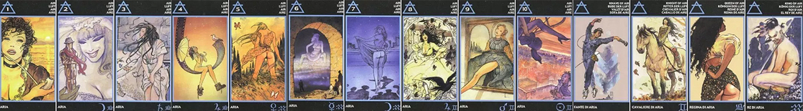

ТУЗ ВОЗДУХА
В вопросах любви Туз Воздуха говорит о ненадёжности отношений. В "Эротическом Таро Манары" на карте изображена томная женщина с курительной трубкой в руках. За её спиной видно море и восходящее Солнце. Ласковые и плещущиеся волны безразличны обворожительной брюнетке, она обдумывает что-то, витает в собственных мыслях, как в клубах дыма. Обманчив её загадочный вид. Туз Воздуха повествует о периодическом отдалении человека, его непонятных поступках, эмоциональном шантаже или о его жестокой игре, называемой "неуверенностью в чувствах".
Романтизм, мечтательность, идеализм, возвышенность. Ментальные настроения, идеи, развитая фантазия. Надуманная и нафантазированно-рафинированная мечта, которая имеет мало общего с реальностью. Отсюда - непрактичность и нежизнеспособность. "Розовые очки", "витание в облаках". В отношениях - надуманная, возвышенная влюбленность, когда вместо реального партнера восторгаются придуманным идеальным образом из сказок, книг и фильмов. Конфетно-букетная стадия отношений или лишь мечты о них. Все происходит больше в голове, а не в реальности - красиво, изысканно и идеально, но нереально. Отношения без физической стороны, без секса. Важны слова, красивые ухаживания - как в сказках. Но есть шанс. И как все будет развиваться дальше – пока не ясно.
2 ВОЗДУХА
Любой конфликт может не только обострить чувства, но и закончиться разрушением. Чтобы прийти в себя нужно отыскать внутреннюю точку опоры. Поиск такого решения символизирует двойка Воздуха в "Эротическом Таро Манары". Здесь в холодных тонах изображена женщина, похожая на Снежную Королеву. В руке она держит фигурку мужчины. Он кажется ей замороженным. А "королева" пристально всматривается в свой "объект", улыбается, как бы взвешивает его достоинства и недостатки. Так двойка Мечей может выражать выбор, затаённую идею, порой – снисходительность по отношению к другим людям.
Безразличие, фальшь, холодность, отстраненность. Может быть лживость. Мыслительный анализ человека и ситуации с разных сторон, выискивание изъянов. При внешней доброжелательности, внутри - привередничество. Обращение внимания на каждую мелочь и завышенные требования. Излишнее трезвомыслие. За деталями личность в целом не видна. Отношения либо вообще отсутствуют, либо люди в разлуке и за это время забыли реальные образы друг друга. Либо же связь надуманная, когда кто-то один все нафантазировал на пустом месте, а второй и не догадывается об этом, и об отношениях даже не помышлял. Связь как игра - кто-то воспринимает партнера как куклу, при этом оба внутренне закрыты и неискренни. Безличность.
3 ВОЗДУХА
Карта тройки Мечей часто говорит об эмоциональных переживаниях, тоске, усталости от работы, о расставании с любимым, когда наличие участливых людей только злит, дополняя и без того неблагоприятный эмоциональный фон. Такой фон можно заметить и на карте тройки Воздуха в "Эротическом Таро Манары". Серые тона рисунка символизируют здесь безрадостность жизни. Ветер носит осеннюю листву, треплет непричёсанные волосы женщины. Она сиротливо стоит в изорванном платье, сжавшись от холода и закрыв глаза. Её образ в раскладе обычно выражает одиночество, разлуку, ожидание или неудовлетворённость человека.
Обида. Задетое самолюбие. Гордыня. Разочарование в партнере и отношениях. Упрямое следование своим моральным принципам, завышенная самооценка, самомнение, неуступчивость. Поза: "А вот пусть он сам! А я не сделаю первый шаг!". Отчаяние, депрессия, одиночество, печаль. В отношениях - переживания, расставания, разочарования из-за неоправданных надежд. Разбитые мечты, подавление чувств. Косность в своей принципиальности.
4 ВОЗДУХА
Четверка Мечей подвергает сомнению эротические фантазии и ожидания желанной любви. Всё кажется слишком идеальным, надуманным, как романтика голливудских фильмов, в которую просто хотелось бы верить. В "Эротическом Таро Манары" позицию сомнения олицетворяет девушка, сидящая на причудливо изогнутой киноленте. В руках она держит зонтик, а взгляд её устремлён в звёздное небо. Она мечтает и старается осмыслить свои мечты, а зонтик – это щит от помех внешнего мира. Рядом с ней на ленте сидит белая птица, символизирующая полёт мысли, фантазии. Так карта говорит о медитации, размышлении, порой – о критичности человека.
Внутренний ребенок. Детская непосредственность, свежесть, наивность, инфантильность, чистота, беззащитность и беспомощность. Нереальные представления о жизни, неразвитость, незрелость, заторможенное развитие. Застревание в детстве. До отношений еще не "дорос", но очень много мечтает, имея сказочные, иллюзорные представления. Жизнь в воображаемом мире, оторванность от реальности, неспособность и нежелание "спуститься на землю" и нести ответственность не только за партнера и отношения, но даже за себя. Беззаботность, подчиняемость, легкомыслие. Идеализм. Отношений либо нет, так как еще до них не доросли, либо они - в самом начале. Возможно, кому-то вообще не до отношений, так как вымышленный мир вполне устраивает, и не важно, что в реальности вообще ничего не происходит.
5 ВОЗДУХА
В числе пять чувствуется элемент удачи, и даже невезение заставляет верить, что скоро всё минует, нам повезёт. Должно повезти, только для этого надо выйти из неблагоприятного окружения, бежать оттуда, где нас не понимают, не любят. Но человек сомневается: если должно повезти, значит полюбят? Подчёркивает подобное сомнение и изображение в пятёрке Мечей в "Эротическом Таро Манары". Девушка в порванном и лоскутами развевающемся на ветру платье стоит посреди поляны. Её вид показывает, что её изнасиловали или пытались сделать это. Из высокой травы к ней тянется мужская рука, говоря – вернись. Девушка стоит в нерешительности. Появившаяся в раскладе пятёрка Воздуха символизирует унижение, часто – отсутствие достоинства у человека, сожаление о происшедшем. Говоря же о качествах личности, карта скажет о напряжённости, непостоянстве в чувствах и животных инстинктах.
Кризис. Столкновение с жесткой реальностью. Бесповоротное разочарование, боль, опустошенность. Надлом, психологическая травма. Решительность в спонтанном действии, которое может казаться неожиданным. Уверенность в своей правоте. Решение об окончательном расставании, уходе. Так как боль в отношениях достигла критической точки, после которой смысла их продолжать не только нет, но и разрыв воспринимается как облегчение. Разрыв либо только что состоялся, либо есть решительное намерение его реализовать. Обстоятельства сильнее человека, и у него на самом деле нет выбора. Уход из отношений - единственный путь. Причем, уход окончательный, после которого ни разу не пожалеешь о содеянном. Связь доставляет одни мучения. Мечты о том, чтобы отношения не разорвались - бесполезны. Это конец.
6 ВОЗДУХА
Карта шестёрки Мечей часто говорит не только о расставании влюблённых, но и о перемене места жительства, рода занятий, эмиграции, путешествии, долговременном приобретении знаний. Так в "Эротическом Таро Манары" на этой карте изображена экскурсия: четверо мужчин сидят в каменной арке, откуда открывается чарующий вид на небо. Они смотрят, как в облаках появляется величественный призрак женщины. Меж ними сидит, мечтательно запрокинув голову, реальная женщина. Быть может та, что в облаках, - это её фантазия? Шестёрка Воздуха часто говорит о вызове неизведанному, о путешествиях и новых впечатлениях. Взаимный интерес, заигрывание, любопытство. Люди присматриваются друг к другу, пытаясь оценить, что каждый из них собой представляет, стоит ли идти на сближение, чего можно ожидать от партнера и от отношений в целом. Особенно если речь идет о новом знакомстве. Если же это уже сложившаяся пара, то карта говорит о неком этапе в отношениях, когда партнеры узнают новые качества друг в друге, несмотря на то, что знакомы давно. Карта показывает большой сексуальный и чувственный потенциал в данных отношениях, возбуждение от новизны, от неизведанного. Люди доброжелательно относятся друг к другу, несмотря на то, что до конца еще не ясно, несет ли связь какую-то опасность. В позиции будущего может указывать на возникновение приятного нового события в личной жизни.
7 ВОЗДУХА
Умение просчитать результаты действий, найти слабое место в звене препятствий и воздействовать на него с помощью магии, хитрости или силы. Подобную хитрость олицетворяет семёрка Мечей в "Эротическом Таро Манары". На карте изображена женщина, которая, заигрывая, приподняла подол своего платья. Она идёт через пустырь, к маячащему огнями большому городу. Соблазнённые её прелестями, за нею следуют мужчины. Как личности они не важны, и мы наблюдаем лишь их тени. Да, видимо, ей нужны провожатые и она так решила этот вопрос. Семёрка Воздуха может говорить об умении манипулировать партнёром, скрытом стремлении получить от него желаемое или о тайных действиях в плане карьеры.
Легкомыслие, ветреность, непостоянство. Ускользание, поиск развлечений, новизны в отношениях. Обман, измена. Все, что интересует, - это смена партнеров ради удовольствия, без малейшей эмоциональной привязанности. Могут быть множественные связи. В отношениях один все время ускользает, а второй его догоняет. Отсутствие близости. Коварство. Пустые, манящие обещания, за которые вовсе не собираются нести ответственность. Неверность, любовный треугольник, развод, предательство.
8 ВОЗДУХА
Восьмёрка Мечей символизирует трудности жизни, созданные людьми. В колоде "Эротического Таро Манары" на данной карте изображена быстро бегущая по дороге женщина. А за ней, широко расставив руки, гонится с гримасой на лице мужчина. Он что-то узнал, и теперь новость стала неприятной для женщины. В прозрачном воздухе летают перья – из-под ног вылетела испуганная ворона. Она и символизирует неприятную новость. Так карта восьмёрки Воздуха может сообщать о трудностях в отношениях, неприятных оговорках, ссорах или случайно узнанных сплетнях – ловушках для наших чувств.
Страхи (как правило, воображаемые). Комплексы, ограничения. Запуганность, выискивание плохого даже там, где его нет. Из-за воображаемых страхов (возможно, навеянных предыдущими отношениями, ничего общего не имеющего с нынешними, или рассказами) связь не может состоятся в полной мере. Ожидание неприятностей. Отсюда - настороженность и нежелание выходить за рамки ограничений. Боязнь противоположного пола, любви, эмоциональной привязанности и физической близости. Сомнения. Нагнетание ситуации. Плохие предчувствия, надуманные опасения. Богатое воображение с негативным оттенком, мешающее жить и строить отношения.
9 ВОЗДУХА
Неприятным для человека событием может быть чье-то воздействие на него, вызывающее раздражение, испуг. Карта символизирует нежиданное предупреждение. Представьте оживший портрет! Изображенная на картине женщ9ина, вдруг, перекинула через дубовую раму ногу, собираясь выйти в реальность. Так карта выражает вещие сны, измененные состояния сознания. В них пробуждаются образы наших предков и сообщают нам о грозящей опасности. Вот что символизирует портрет! И карта говорит о том, что человеку придется участвовать в каком-то неприятном событии, советует отказаться от задуманных планов. Изредка же ее изображение символизирует "зов крови", он означает: с кем-то из родственников призошла неприятность.
Выход за рамки ограничений, привычных представлений. Шаг навстречу новому, но еще с закрытыми глазами. Что впереди - неясно. Обычно карта говорит, что мы имеем возможность и силы воплотить мыслеформы в реальность, исполнить давно желаемое, если очень захотим. Никакие препятствия не страшны. Если речь идет о новом знакомстве, карта показывает самое начало отношений, шаг навстречу их установлению; а если о давно существующей связи - о попытке выйти за рамки привычного в отношениях, оживить их. Это карта взращивания мечты и приближения к ее реализации.
10 ВОЗДУХА
Десятка Мечей в любви – особо неблагоприятная карта, сообщающая о безразличии партнёра, о его желании расстаться. Подобное расставание можно заметить на рисунке десятки Воздуха в "Эротическом Таро Манары". Очаровательные ножки прощально свесились с вертолёта. С одной из них падает туфелька в руки мужчины, стоящего на крыше небоскрёба. Лицо его выражает горесть разлуки. Современный сюжет о Золушке: бал кончился, теперь началась другая жизнь. Остались лишь воспоминания о прошлом, переживания, слёзы и пугающая пустотой неизвестность.
Непостоянство, легкомыслие. Обещание вернуться, которое может не исполниться. Зыбкость отношений. Карта встреч и расставаний, но с обещаниями, что разлука временна. Никакой ответственности, стабильности и уверенности. Кто-то из двоих испытывает перманентное желание новизны и ищет приключений. Приходит и уходит, а второй его ждет, несмотря ни на что. Именно эта терпеливость и заставляет ветреного возвращаться. Отношения непредсказуемы. Что будет дальше - неясно. Скорее всего, встреча вновь состоится, но стабильность наступит вряд ли. Частые расставания могут разрушить отношения, которые по сути, держаться на терпении второго партнера.
СЛУГА ВОЗДУХА
Нередко Вестник Мечей олицетворяет человека, стоящего на низшей ступени исполнительной власти (делопроизводитель, охранник, внештатный сотрудник). Подчеркивает эту ступень в колоде "Эротического Таро Манары" гаечный ключ в руках изображённого на карте мужчины. Однако этот мужчина не работает, а танцует. Так выражены его грациозность, наличие определённой свободы, работа по вдохновению, умение проявить внимание к интересующему его предмету или собеседнику.
Увлеченность своими фантазиями, которые дают ощущение эйфории и восторженности в любой ситуации, даже тяжелой. Пребывание в своем внутреннем мире обеспечивает чувство счастья. Реальность не замечается, серые будни игнорируются. Карта указывает либо на восторженную влюбленность, идеализацию возлюбленного, неведение его истинного лица, либо на упоение от полного погружения в то, что приносит радость - какое-то дело, творчество, сублимация сексуальной энергии. В отношениях люди или вместе увлечены одним делом, или кто-то из двоих не замечает второго и самозабвенно погружен в себя и в свое увлечение, при этом пренебрегая реальными событиями и своими повседневными обязанностями. Много слов и мало дела. Полет души. Непрактичность, безответственность, оторванность от реальности.
ВСАДНИЦА ВОЗДУХА
Эмоциональную привязанность к другому лицу, взаимное дополнение людей может выражать Всадница Воздуха. Темноволосая красавица сидящая на белом коне, держит цепь, символизирующую прочность межличностных отношений. Ветер треплет её смоляные волосы, носит возле неё осеннюю листву. Опавшие листья символизируют длительность этих отношений и надёжность самой всадницы. Персонаж этой карты может выражать ответственность и полномочия какого-то лица, инициативу и смелость в решении назревших проблем.
Карта взаимодополнения противоположностей. Ум, подвижность и коммуникабельность заземляются практичностью и основательностью. Отношения в виде удобного и гармоничного сотрудничества. Устойчивый союз, благодаря удобству и полезному взаимообмену. Дружба, взаимопомощь. Идеи воплощаются в жизнь, планы реализуются. Секс если и есть, то далеко не главный в этой паре. Сотрудничество и дружба - на первом месте. Эмоций практически нет.
КОРОЛЕВА ВОЗДУХА
Женщина, олицетворённая картой Королевы Воздуха, имеет тонкость восприятия, дар совета, хороший вкус. Она может быть приятной в общении подругой. Однако Вам лучше не представлять ей своего знакомого: свойственная ей привычка заигрывать с мужчинами сделает её из лучшей подруги врагом. Такая черта характера особенно ярко выразилась в "Эротическом Таро Манары". Здесь изображена стоящая к нам спиной брюнетка. Казалось бы, её абсолютно не интересует наблюдатель, но её голова повёрнута вполоборота. Подбоченясь, она бесстыдно приоткрывает свою плотную ягодицу. Голова девушки повёрнута потому, что она высматривает, какое она производит впечатление. И её образ в раскладе часто сообщает об обольщении, провокации или о вызванной у человека вполне обоснованной ревности.
Карта указывает на кокетку, умеющую завлекать, очаровывать окружающих. Она умна, дипломатична, интеллектуальна, эрудирована, с большим жизненным опытом, но поверхностна, болтлива и может быть нечестна. Способна разлучить, играючи. Если речь идет не о человеке, то карта показывает отношения легкие, ни к чему не обязывающие, поверхностные, увлекательные, интересные, но не затрагивающие глубоко. Это флирт, игра ради удовольствия, развлечения. Главное в отношениях - игра слов, остроумие, а сексуальная сторона отходит на второй план. Сердечного интереса практически нет. Важен процесс флирта и удовольствия от того, что нравишься.
КОРОЛЬ ВОЗДУХА
Стихия Воздуха дарует персонажу этой карты высокий интеллект и положение в обществе. Так, в "Эротическом Таро Манары" он даже изображён как вождь племени. Вождь сидит, обхватив руками покоящееся на его плече копьё. И его открыто улыбающееся лицо украшает боевая раскраска. Да, он готов к защите, он – отец целого племени, что, кстати, символически подтверждает лежащее перед ним яйцо. Как отец, он вынужден устанавливать законы, вершить суд. Поэтому карта выражает общепризнанный авторитет человека, характеризует его как наблюдателя с полномочиями. Подчас она просто напоминает о правилах, которые следует соблюдать.
Карта свидетельствует о вмешательстве в ситуацию мужчины, который характеризуется философскими взглядами, высоким интеллектом, исследовательским, не шаблонным, неординарным мышлением. Он чудаковат, может казаться не от мира сего, потому что верит в чудеса и опирается только на свои логические умозаключения. Ему недостает эмоций и интуиции, чутья. Посему он всегда надеется на то, что чудо возможно получить эмпирическим путем, несмотря на предостережения. Он наивен и большой романтик, но не эмоциональный и не практичный. Если карта показывает отношения, а не человека, то они опираются на обмен информацией, интеллектуальны, в них много разговоров, в том числе серьезных, глубоких, философских. Романтика в таких отношениях присутствует всегда, как и наивность, вера в чудеса. Кто-то все время наступает на одни и те же грабли, из-за игнорирования знаков и по причине слепой веры в чудеса. Наивно представляя, что может хоть в этих отношениях все будет хорошо, не так как в прошлых. Но это отнюдь не значит, что так и будет.